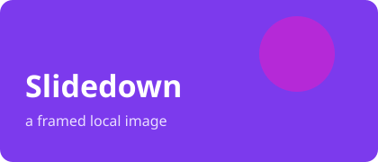

One language, two themes, forty-five components
.sd, compile, present.
How a deck flows, end to end
focal to make it the anchor.Ordered steps beside checked lists
One option per card
Data, validated against a schema.
Manifest + template + CSS.
A value-set each, light & dark.
Weigh the options, mark the winner
| Option | Fast | Diffable | Chosen |
|---|---|---|---|
| Slidedown | |||
| Slide exports |
Panels in parallel, phases over time
An alternating, boxed timeline
.sdMetrics, a gauge and progress bars
Value, target, movement
One headline, and the workstreams behind it
The whole pitch in a sentence
Decks should be written, not dragged.
Three plans, one engine
Two ways to show structure
Commits per day, four weeks
The surface and the stack
/deckslist decks/compilebuild a deck/themes/:idupdate a theme/decks/:idremove a deckA bar per team
Month over month
Each slice takes the spotlight
Tables, formulas and code
| Stage | Output |
|---|---|
| parse | AST |
| render | HTML |
node compiler/slidedown.js examples/demo.sdThe team, and the usual questions
Simplicity is the ultimate sophistication.
Images, icons and raw HTML

Markdown in, a deck out